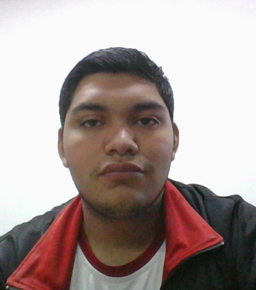

Este sistema web educativo fue diseñado, estructurado y programado como una herramienta interactiva para el aprendizaje colaborativo de la geometría analítica.
Desarrollador: @Brandon Ryan Zea Martinez
Propósito: Facilitar la comprensión paso a paso de conceptos matemáticos fundamentales, permitiendo la creación de una comunidad de estudio donde los estudiantes puedan compartir sus propios ejercicios resueltos.
Para la construcción completa de esta plataforma web se emplearon tecnologías estándar de la industria del desarrollo de software:
Queremos extender un agradecimiento especial a los recursos gráficos y librerías de código abierto que le dieron una estética moderna y funcional a la aplicación:
• Font Awesome: Por la biblioteca de iconos vectoriales utilizada en los botones, campos de texto y menús interactivos.
• Google Fonts: Por las tipografías limpias y de alta legibilidad que facilitan el estudio teórico de las matemáticas.
• Comunidad de Estudiantes: A cada compañero que aporta capturas de sus cuadernos y ejercicios, haciendo que este temario crezca día con día.
